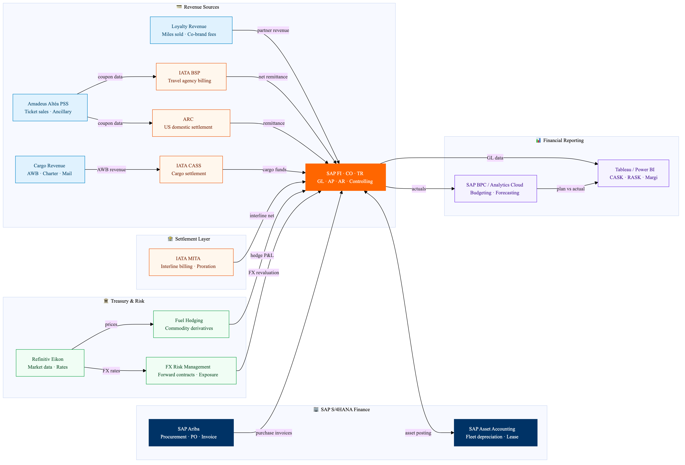

Finance & Revenue Accounting
Ticket revenue, interline settlement, cost accounting and treasury data flows
🗺️
Integration Architecture Diagram


Ticket revenue, interline settlement, cost accounting and treasury data flows
